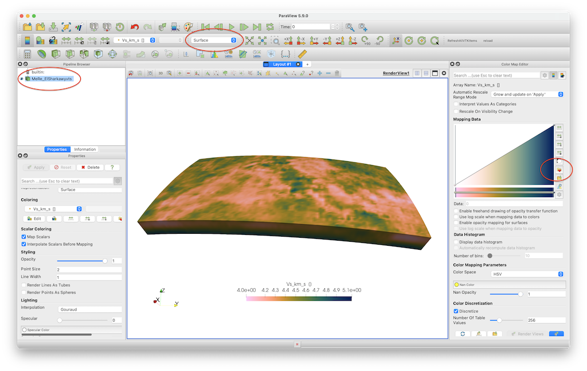
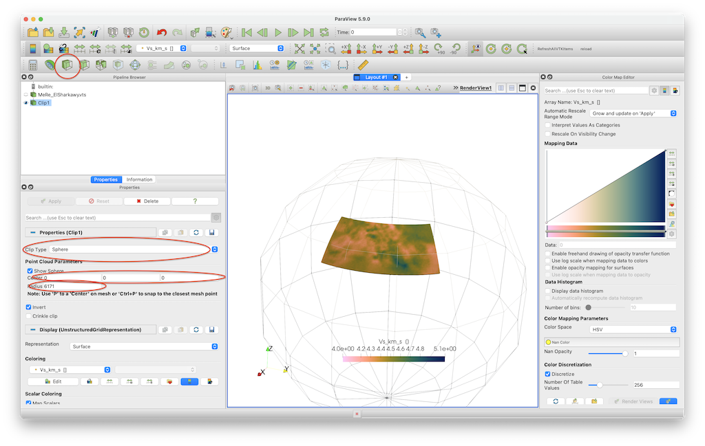

2 - 3D tomography model that is given as a netCDF file
Goal
This explains how to load a 3D seismic data set that is given in netCDF format, and plot it in paraview. The example is a shear-wave velocity model of the Alpine-Mediterranean region, described in:
El-Sharkawy et al. (2020), The Slab Puzzle of the Alpine‐Mediterranean Region: Insights from a new, High‐Resolution, Shear‐Wave Velocity Model of the Upper Mantle, G$^3$ https://doi.org/10.1029/2020GC008993
Steps
1. Download data
The data is can be downloaded from https://ds.iris.edu/files/products/emc/emc-files/El-Sharkawy-etal-G3.2020-MeRE2020-Mediterranean-0.0.nc. Do that and start julia from the directory where it was downloaded.
2. Read data into Julia
The main data-file, El-Sharkawy-etal-G3.2020-MeRE2020-Mediterranean-0.0.nc, is given as netCDF file. To read in data of this type, it is necessary to load an appropriate package. Here, we will use the https://github.com/JuliaGeo/NetCDF.jl package. Download and install the package with:
julia> using Pkg
julia> Pkg.add("NetCDF")First, let us have a look at the contents of this file (assuming that you are in the same directory where the file is located):
julia> using NetCDF
julia> filename = ("El-Sharkawy-etal-G3.2020-MeRE2020-Mediterranean-0.0.nc")
julia> ncinfo("El-Sharkawy-etal-G3.2020-MeRE2020-Mediterranean-0.0.nc")
##### NetCDF File #####
/Users/mthiel/PROJECTS/CURRENT/SPP2017/GeophysicalModelGenerator/InputData/El-Sharkawy/El-Sharkawy-etal-G3.2020-MeRE2020-Mediterranean-0.0.nc
##### Dimensions #####
Name Length
--------------------------------------------------------------------------------------------------------------------------
depth 301
latitude 100
longitude 100
##### Variables #####
Name Type Dimensions
--------------------------------------------------------------------------------------------------------------------------
depth FLOAT depth
latitude FLOAT latitude
longitude FLOAT longitude
Vs FLOAT longitude latitude depth
##### Attributes #####
Variable Name Value
--------------------------------------------------------------------------------------------------------------------------
global author_email amr.elsharkawy@ifg.uni-kiel.de
global data_revision r.0.0
global author_institution Institute of Geosciences, University of Kiel, Otto-Hahn Pl..
global keywords seismic tomography, shear wave, Mediterranean, phase veloc..
global acknowledgment Model was provided by Dr. El-Sharkawy, Institute of Geosci..
global history 2020-09-29 14:37:43 UTC Converted to netCDF by GeoCSV_2_ne..
global repository_pid doi:10.17611/dp/emc.2020.meresvelsh.1
global id MeRE2020
global author_name Amr EL-Sharkawy
global comment model converted to netCDF by IRIS EMC
global NCO netCDF Operators version 4.7.5 (Homepage = http://nco.sf.n..
global summary MeRE2020 is a high-resolution Shearâwave velocity mod..
global repository_institution IRIS DMC
global netCDF_file El-Sharkawy-etal-G3.2020-MeRE2020-Mediterranean-1.0.nc
global author_url https://www.seismologie.ifg.uni-kiel.de
global reference El-Sharkawy, et al. (2020)
global repository_name EMC
global Conventions CF-1.0
global Metadata_Conventions Unidata Dataset Discovery v1.0
global title The Slab Puzzle of the AlpineâMediterranean Region: I..
depth units km
depth long_name depth in km
depth display_name depth in km
depth positive down
latitude units degrees_north
latitude long_name Latitude; positive north
latitude standard_name latitude
longitude units degrees_east
longitude long_name Longitude; positive east
longitude standard_name longitude
Vs units km.s-1
Vs long_name Shear wave velocity
Vs display_name S Velocity (km/s)As you can see, there is quite some information present in this file. The most important information here are the different variables stored in this file:
##### Variables #####
Name Type Dimensions
--------------------------------------------------------------------------------------------------------------------------
depth FLOAT depth
latitude FLOAT latitude
longitude FLOAT longitude
Vs FLOAT longitude latitude depthHere we can see that there are four variables in this file, three of them (depth,latitude, longitude) having a single dimension and the fourth one (Vs) having dimensions of the three previous variables. The three one-dimensional vectors therefore denote a regular grid of coordinates defining the locations where Vs is stored. To load this data, we can now simply use the command ncread:
julia> lat = ncread(filename,"latitude")
julia> lon = ncread(filename,"longitude")
julia> depth = ncread(filename,"depth")
julia> Vs_3D = ncread(filename,"Vs")
julia> depth = -1 .* depthNote that we multiplied depth with -1. This is necessary to make depth to be negative, as that is what GeophysicalModelGenerator.jl expects.
3. Reformat the coordinate data
In the netCDF file, coordinates are given as 1D vectors denoting the location of nodes in a regular grid. However, GeophysicalModelGenerator.jl expects true 3D data, where each data point is assigned a latitude,longitude, depth and the respective property (here: Vs). To generate this full regular 3D grid, do the following:
julia> using GeophysicalModelGenerator
Lon3D,Lat3D,Depth3D = LonLatDepthGrid(lon, lat, depth);4. Generate Paraview file
Once the 3D coordinate matrix has been generated, producing a Paraview file is done with the following command
julia> Data_set = GeoData(Lon3D,Lat3D,Depth3D,(Vs_km_s=Vs_3D,))
GeoData
size : (100, 100, 301)
lon ϵ [ 29.0 - 51.0]
lat ϵ [ -11.0 - 45.9900016784668]
depth ϵ [ -350.0 km - -50.0 km]
fields: (:Vs_km_s,)
julia> Write_Paraview(Data_set, "MeRe_ElSharkawy")
1-element Vector{String}:
"MeRe_ElSharkawy.vts"5. Plotting data in Paraview
In paraview you can open the file and visualize it:

Note that we employ the perceptually uniform color map Barlow, which you can download here.
If you want to clip the data set @ 200 km depth, you need to select the Clip tool, select Sphere as a clip type, set the center to [0,0,0] and set the radius to 6171 (=radius earth - 200 km).

6. Julia script
The full julia script that does it all is given here. You need to be in the same directory as in the data file, after which you can run it in julia with
julia> include("MeRe_ElSharkawy.jl")